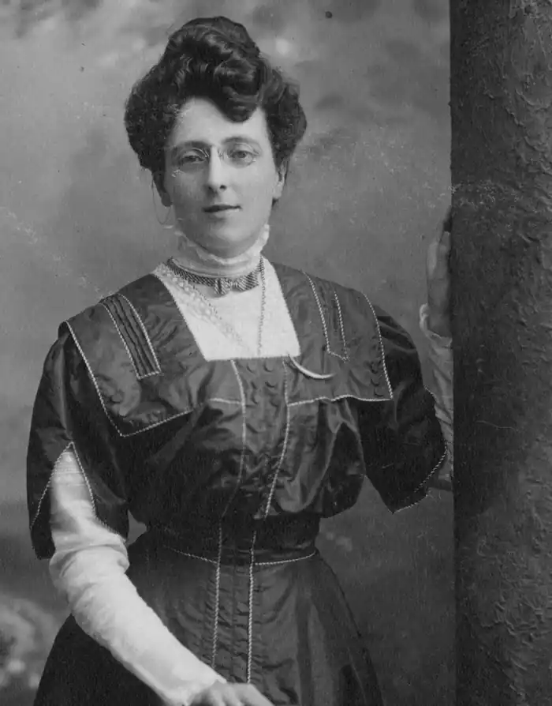

Люсі-Мод Монтгомері (англ. Lucy Maud Montgomery;30 листопада 1874—24 квітня 1942) — канадська письменниця і поетеса, автор 23 романів, 530 оповідань і більш ніж 500 віршів; її надруковані щоденники нараховують більше 5000 сторінок. Найбільш її відомий твір про рудоволосу дівчинку з нелегкою долею "Енн із Зелених Дахів" (1908), став бестселером і тільки за перші 5 років був перевиданий 32 рази. Вважається, що саме він надихнув Астрід Ліндгрен на написання низки книжок "Пеппі Довгапанчоха".
В 1935 році письменниці було присвоєне почесне звання офіцеру Ордена Британської імперії. Її твори були визнани культурною спадщиною Канади.
Лусі Монтгомері походить з Острова Принца Едварда. Друзі звали її просто Мод — з англ. Maud. Її мати померла від туберкульозу, коли дівчинці ще не було двох років. Після смерті матері Люсі-Мод Монтгомері проживала з дідусем та бабусею в містечку Кевендіш (англ. Cavendish). Закінчивши народну школу, вчилася в Коледжі Принца Вельського (англ. Prince of Wales College) у Шарлоттауні, а відтак в Університеті Далхаузі (англ. Dalhousie University) в Галіфаксі, Нова Шотландія. Після закінчення університету працює вчителькою, займається журналістикою. У 1908 році публікує свою першу і найвідомішу книжку "Енн із Зелених Дахів" (англ. Anne of Green Gables) — роман про пригоди дівчинки Енн Ширлі (англ. Anne Shirley), яка залишилася без батьків і яку згодом удочерила селянська родина, що мешкала на хуторі "Зелені Дахи". Доля дівчинки Енн багато в чому збігається із долею самої Монтгомері. Прототипом для створення персонажу була американська натурниця і акторка Несбіт Евелін, фотокартку якої Люсі-Мод Монтгомері повісила на стіну у своїй кімнаті. Після смерті дідуся та бабусі, письменниця одружується із пресвітеріанським проповідником Ювеном Макдональдом (англ. Ewan Macdonald) і вони виховують трьох синів. Романи Люсі Мод Монтгомері 1908 — Anne of Green Gables (укр. "Енн із Зелених дахів", 2012, видавництво "Урбіно") 1909 — Anne of Avonlea (sequel to Anne of Green Gables) (укр. "Енн із Ейвонлі", 2013, видавництво "Урбіно") 1910 — Kilmeny of the Orchard 1911 — The Story Girl 1913 — The Golden Road (sequel to The Story Girl) 1915 — Anne of the Island (sequel to Anne of Avonlea) ("Енн із Острова Принца Едварда", 2013, видавництво "Урбіно") 1917 — Anne's House of Dreams (sequel to Anne of Windy Poplars) ("Енн у Домі Мрії", 2014, видавництво "Урбіно") 1919 — Rainbow Valley (sequel to Anne of Ingleside) ("Діти з Долини Райдуг", 2015, видавництво "Урбіно") 1921 — Rilla of Ingleside (sequel to Rainbow Valley) ("Рілла з Інглсайду", видавництво "Урбіно") 1923 — Emily of New Moon ("Емілі з Місячного серпа", 2012, видавництво "Свічадо") 1925 — Emily Climbs (sequel to Emily of New Moon) ("Емілі виростає", 2014, видавництво "Свічадо") 1926 — The Blue Castle ("Блакитна фортеця", 2017, видавництво "Свічадо") 1927 — Emily's Quest (sequel to Emily Climbs) 1929 — Magic for Marigold 1931 — A Tangled Web 1932 — Pat of Silver Bush 1935 — Mistress Pat (sequel to Pat of Silver Bush) 1936 — Anne of Windy Poplars (sequel to Anne of the Island) ("Енн із Шелестких Тополь", 2014, видавництво "Урбіно") 1937 — Jane of Lantern Hill ("Джейн з Пагорба Ліхтарів", 2015, видавництво "Свічадо") 1939 — Anne of Ingleside (sequel to Anne's House of Dreams) ("Енн із Інглсайду", 2015, видавництво "Урбіно") "Енн" і туристична індустрія Популярність авторки та персонажів її книг активно використовується туристичною індустрією канадської провінції Острів Принца Едварда. У туристичні маршрути включено відтворений хутір-музей Green Gables, "населений" персонажами роману. У театрах йдуть мюзикли за книгами Монтгомері. Туристам радять відвідати шоколадний магазин, де "колись купувала цукерки сама Люсі Мод" тощо.